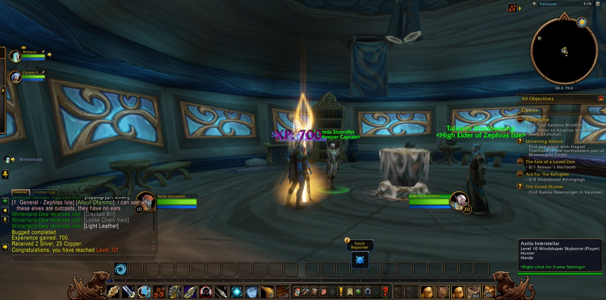
Axilla Interstellar came again into Valanaar on Zephras Isle, and there Winterland, a hunter like herself, joined her on the road. Winterland went with her for the greater part of that night's journey, and was with her again at the last. Near Valanaar she cleared the Enchanted Skyhoppers, and the errand called "Bugged" was done. With it she grew into the strength of her tenth level. Chuleta the druid walked with her a little way while she took up new tasks. She heard what Ayessa had to tell of "A Grand Adventure," and listened to Riaani Nightwind speak of "The Broken Construct."
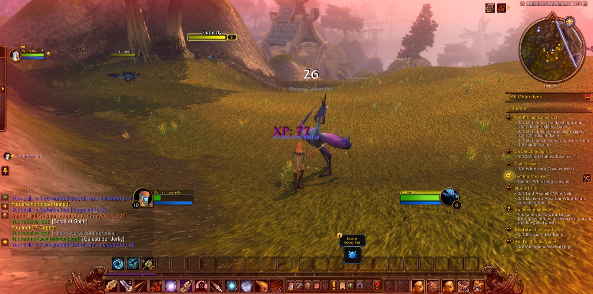
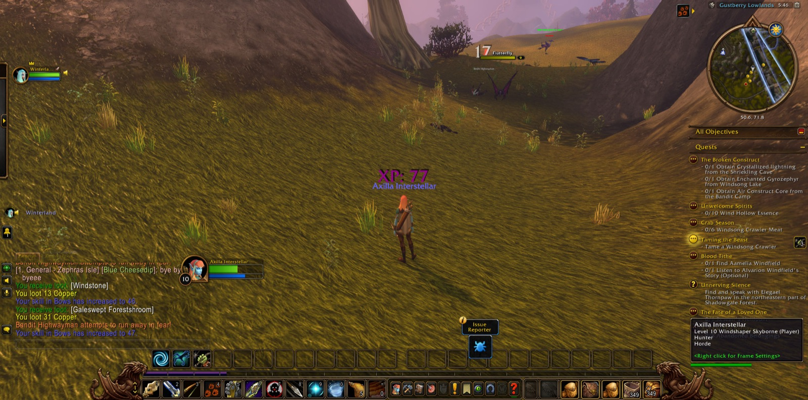
Then she went out into the Gustberry Lowlands, where Bandit Highwaymen and Ornery Galestriders fell before her bow. She passed through the Shriekling Den and climbed into the Shen'dar Highlands. By Windsong Lake she hunted the Windsong Crawlers until she had the meat that "Crab Season" asked of her. In the Highlands she took up the matter of the Al'Aketh Assassins. Fiasko the druid and Evil the rogue fought beside her briefly there, and ten assassins were slain. Back in Valanaar she saw "Taming the Beast" through, more than once. A Vuldren Alpha was among the beasts she faced on that errand, and when it was finished she came into her eleventh level. Then she went down into the Shriekling Den again. She took the Crystallized Lightning from its depths, and there the Shriekling Matriarch fell.
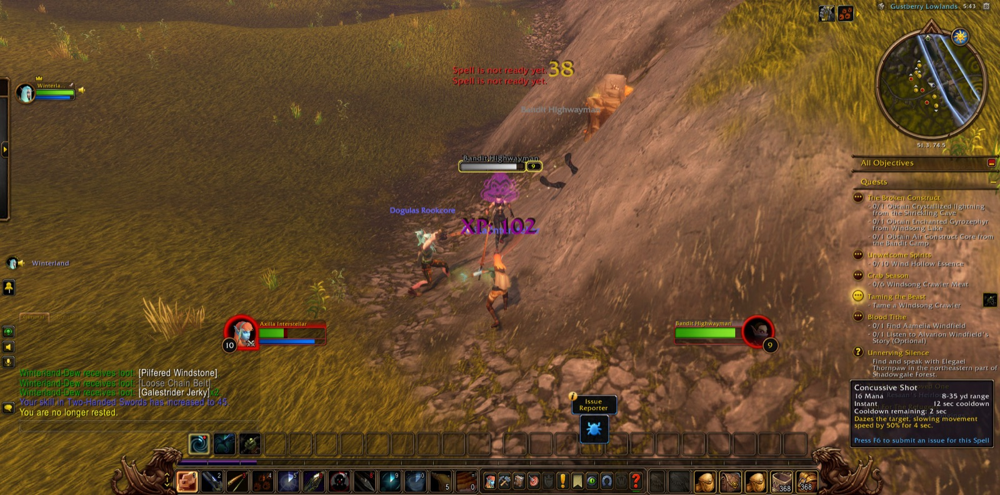
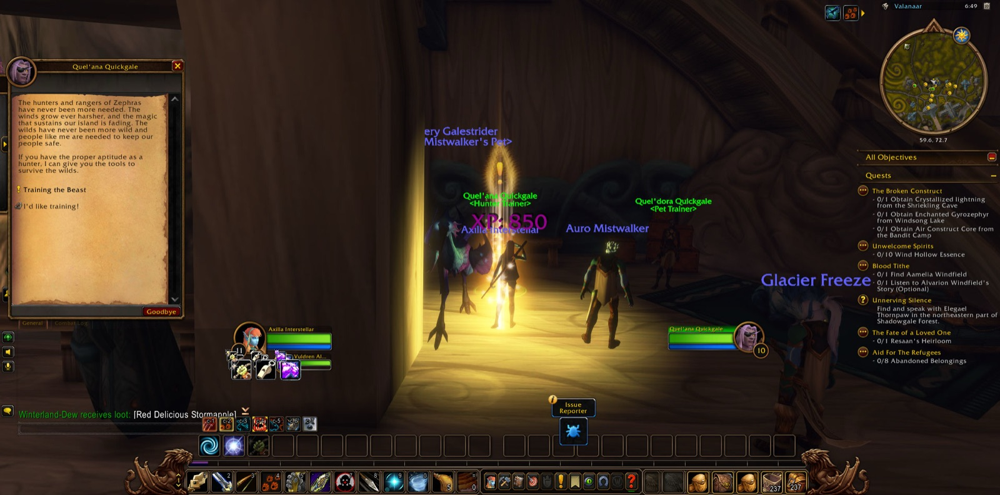
Past the Shrine of Akir lay Shadowgale Forest, and the way through it was hard. She fell there and had to go back over the ground, but she did not turn aside from it. She finished "Unnerving Silence" and gathered the Lady's Tear Moss. Then she gathered twenty Pristine Shriekling Feathers for binding, and paused often along the way to take a picture. In the Ruins of Ban'aethal she laid the Wind Hollows to rest. Winterland parted from her there, and Powdur, another hunter, took up the road beside her and kept with her until the end. Among those ruins she found abandoned belongings for the refugees and Resaan's heirloom, which touched on the fate of a loved one.
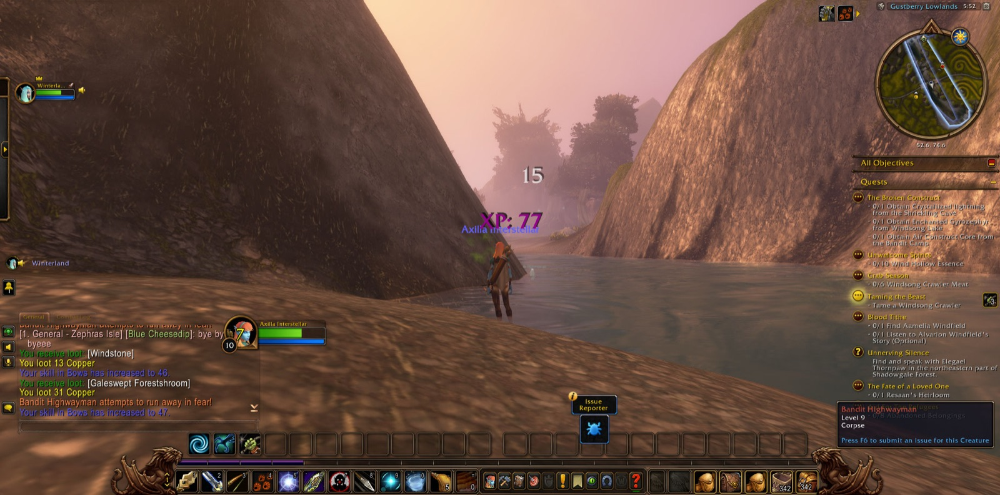
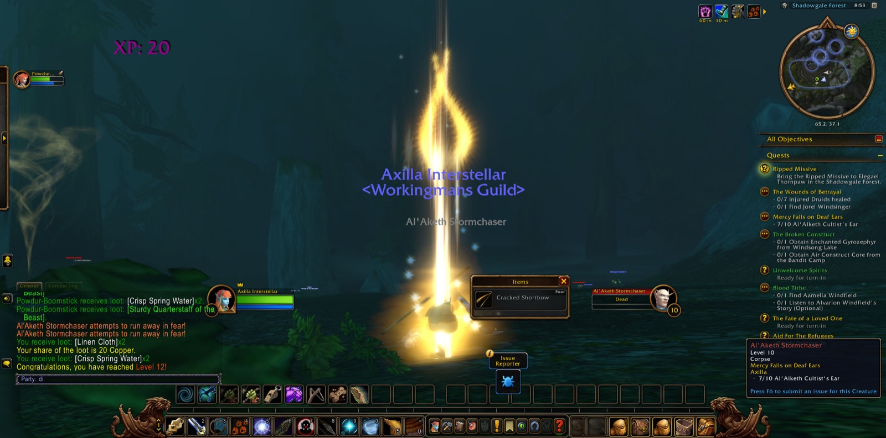
Beyond the ruins, under the eaves of Shadowgale and at the mouth of Nightclaw Cavern, the Al'Aketh Stormchasers and Footsoldiers fell in great number. She recovered the bloody heirlooms of "Unwanted and Unworthy." Commander Haalien was slain, and Axilla bore away his head, and "The Ties That Bind" was finished. Amid that work she came into her twelfth level. She showed the cultists no mercy, as the errand that bore that name required, and she read the ripped missive that led her toward the fate of the den. In Nightclaw Cavern she found Jorel Windsinger and tended seven wounded druids, and so she answered "The Wounds of Betrayal." Then at last she came to Shen'dar Village, where her journey paused for a while.
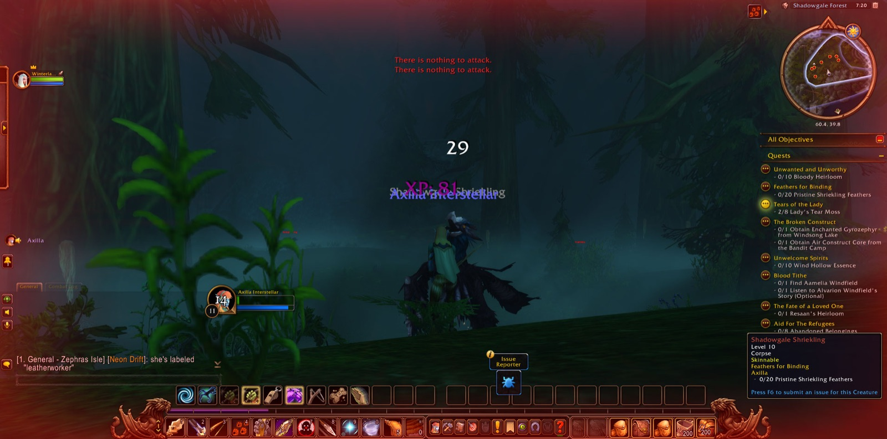
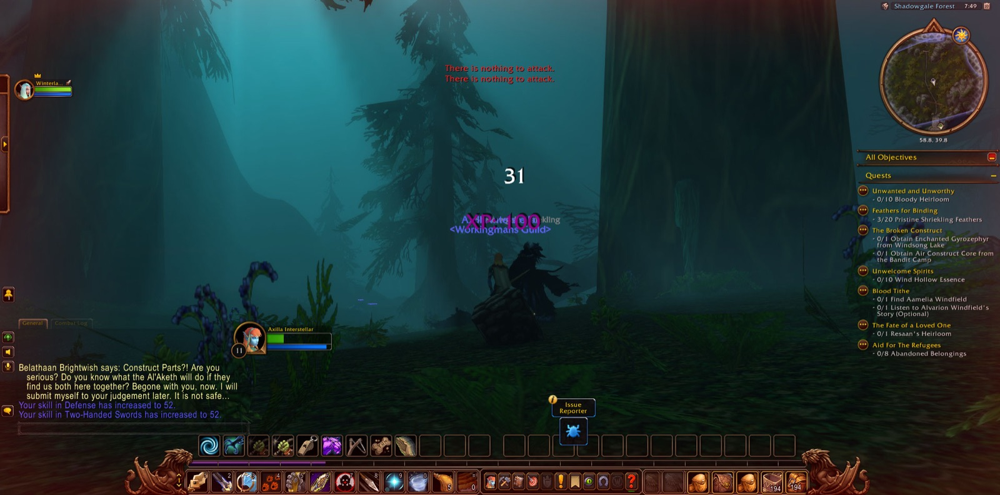
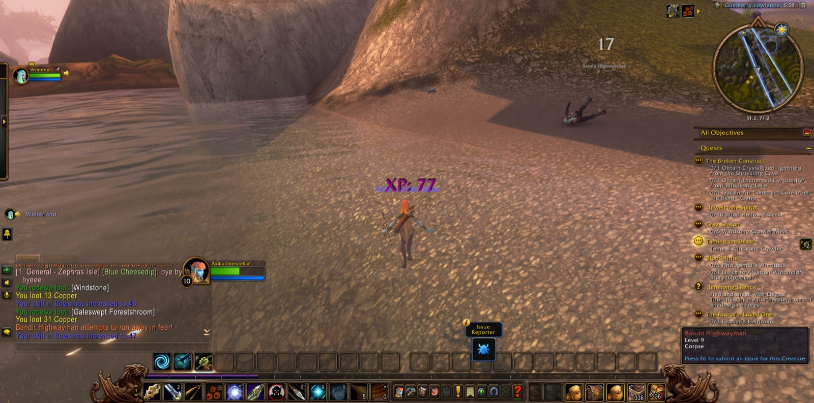
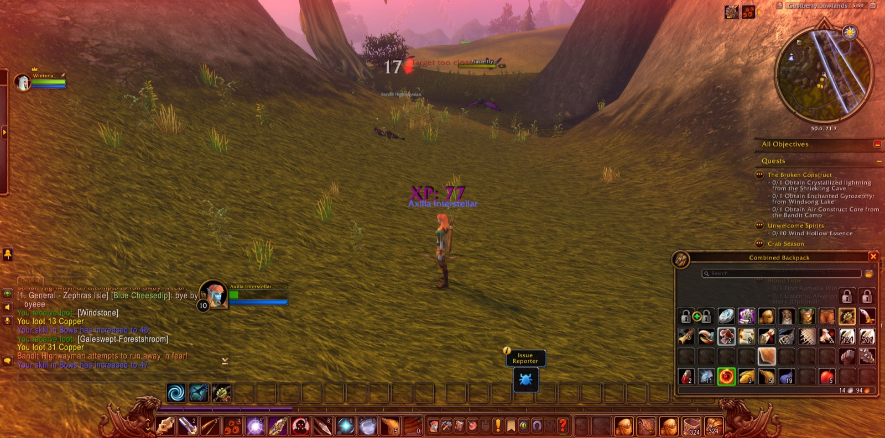
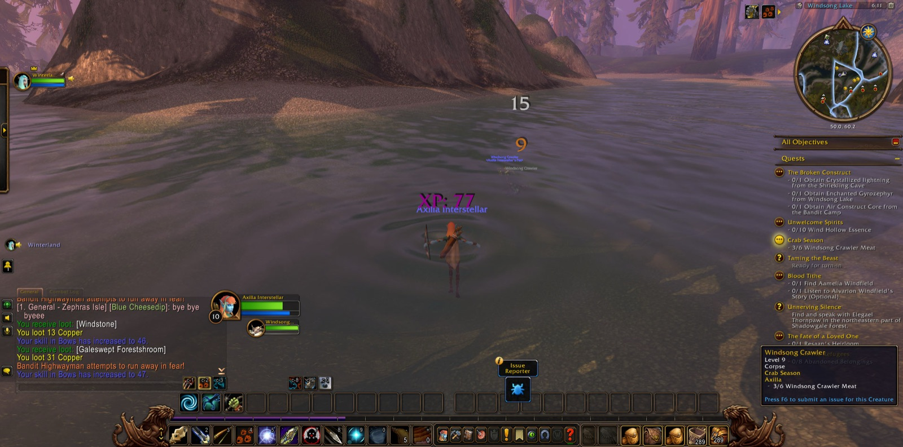
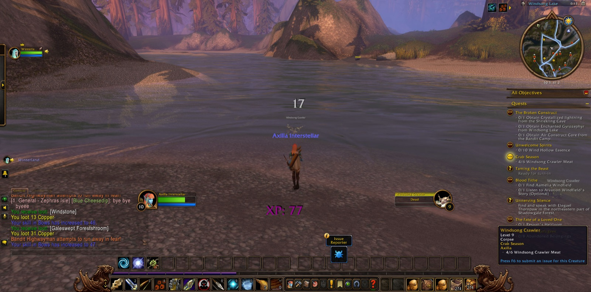
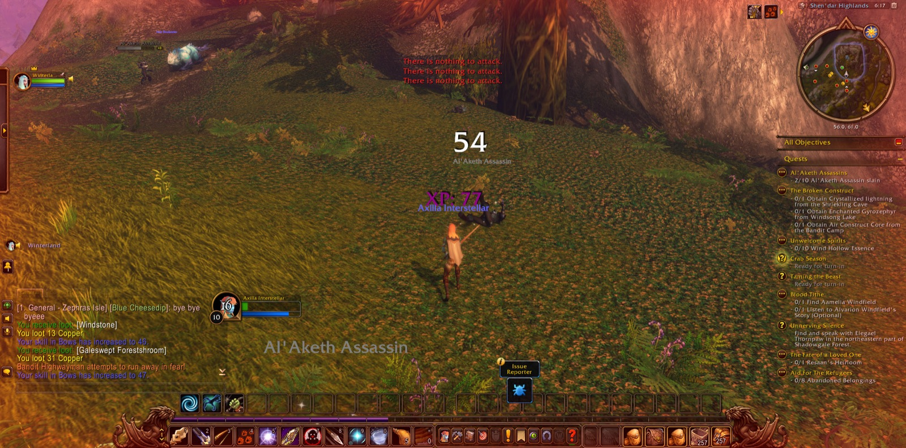
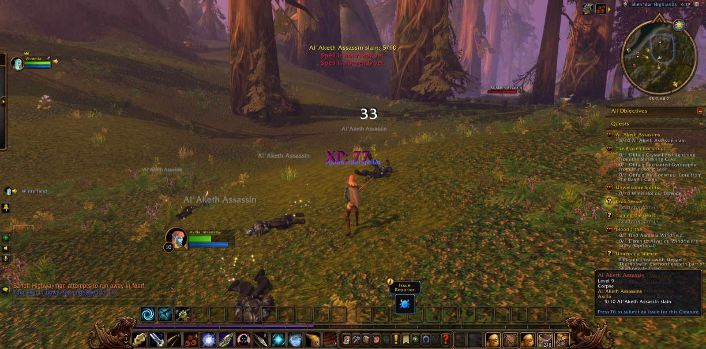